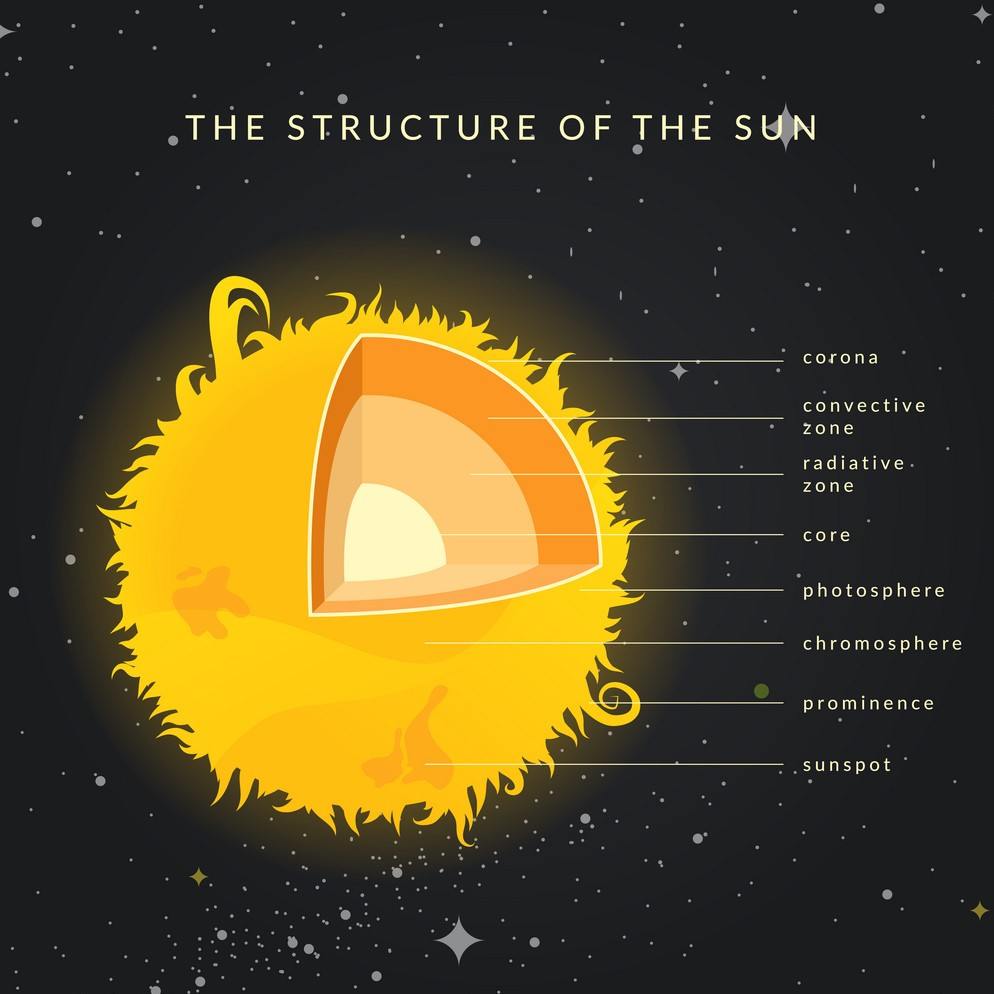
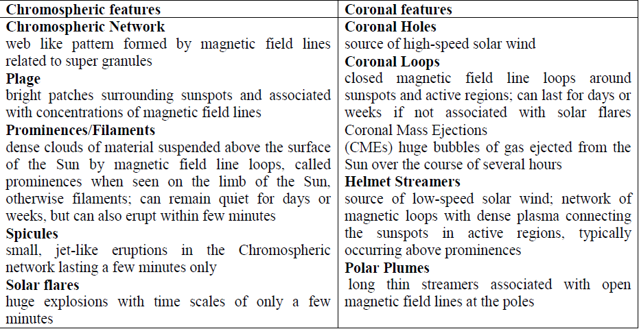

.jpg.crdownload)
NASA's Parker Solar Probe mission will “touch the Sun,” flying directly through the solar corona, facing brutal heat and radiation conditions and providing unprecedented, close-up observations of the star we live with. These observations will address unsolved science questions such as how the Sun's corona is heated and how the solar wind is accelerated. It will also benefit humans on the ground by making critical contributions to our ability to forecast major space weather events that impact life and technology on Earth.
Parker solar probe is a NASA robotic spacecraft launched in 2018 and currently en route to probe the outer corona of the Sun. It will approach to within 9.86 solar radii (6.9 million kilometers) from the center of the Sun and by 2025 will travel, at closest approach, as fast as 690,000 km/h, or 0.064% the speed of light. The project was announced in the fiscal 2009 budget year. The cost of the project is US$1.5 billion. Johns Hopkins University Applied physics laboratory designed and built the spacecraft, which was launched on August 12, 2018. It became the first NASA spacecraft named after a living person, honoring physicist Eugene Parker, professor emeritus at the University of Chicago.
It will start his tour towards the sun in August 2018. Its tour has got many stations. Its first starting station from the earth as it exceeded the ionosphere which is a layer of charged particles surrounds the earth where the international spaces stations orbit. His second station is the eclipse which is a natural phenomenon that happens on earth when people can experience lemur and solar eclipses which Earth, the moon, and the sun line up. It will pass through the third station which is the upper atmosphere. The fourth station is Aurora which is also a natural phenomenon which characterized by a display of a natural colored light in the sky. The fifth station is magnetosphere which is that area of space, around a planet, that is controlled by the planet's magnetic field (which attracts everything around d us). The shape of the Earth's magnetosphere is the direct result of being blasted by solar wind and protected from the sun. The sixth station is (L1) point. This point lies between earth and sun away from earth about 1 million mile. The seventh Station is interplanetary space. The most important station which we consider a gravity assist is Venus. We have to say thank you to Venus' gravity as it helped us to slow out our orbit to fall even closer to the Sun. Our hero has revealed the red-hot glow of Venus's surface. The last 4 stations are solar wind solar cycle and finally the sun. These stations lead to important questions such as what is the solar wind and solar cycle? Well, we're here to help you.
First, we must know that the sun is a giant ball of hot plasma that's held together by its gravity. Some of the solar material which is bounded by the sun's gravity and magnetic field escapes the pull of the Sun and gushes out into space as solar wind. Solar wind is a stream of charged particles released from the upper atmosphere of the Sun called the Corona. Secondly, we will talk about the dust which consists of tiny particles of solid material floating around in the space between the stars. It is not the same as the dust you find in your house but more like smoke with small particles. But as dust grains pelt the spacecraft along its path, the high-velocity impacts create clouds of plasma. These clouds produce unique electrical charges that are picked up by several sensors on the probe's FIELDS instrument, which is designed to measure the electric and magnetic fields near the Sun. The Parker Solar Probe team did prepare for the spacecraft's precarious trek through this potentially hazardous environment at least as well as the scientific community understood it before the launch. You may ask yourself how it bear the extreme temperature, well it has 3 important things which are autonomy software, cooling system and the important one which is the heat shield.
The rocket and its devices were designed to withstand high temperatures and strong rays that will fall on it from the sun. Therefore, it was provided with a shield to protect it and its devices. The protective shield shape of the hexagonal probe, which is installed on the face of the probe opposite the sun. It is made of carbon reinforced and it can withstand a temperature of 1,370 ° C, and a reflective plate of alumina reduces the absorption of solar rays, and the probe's devices and technical systems are placed in the central part of the visor, and if the visor is not built on the probe, the sun's rays will fall directly on the probe and spoil it within several tens of seconds. Since radio communication with Earth would take about eight minutes, the Parker probe would have to act independently and quickly to protect itself, according to project scientist Nikki Fox, which the team describes as "the most autonomous spacecraft ever" with its spiral approach to the sun and a short final orbit close to The Sun, the Parker Probe approaches the Sun 24 times and then makes observations and records the measurements.
However, due to the minimum distance from the sun, the heat radiation of the sun will be strong on the probe devices, so the probe must be equipped with a shield that protects it from the sun's heat and radiation. It must withstand on the side facing the sun about 1430 degrees Celsius, the heat shield is composed of layers of reinforced carbon, so the intensity of solar radiation at the nearest point to the sun is about 650 times stronger than its intensity at the distance of the earth, the shield on the surface contains a white ceramic layer that reflects light and heat Some of the probe's telescopes protrude from behind the sun shield, depending on the design, including measurement sensors.
 
As we mentioned the sun is a superhot electrically charged plasma which pours energy into near - Earth space. So, the magnetosphere protects us; However, it's protection isn't perfect.
There 3 main possibilities that an explosion on the sun's surface can affect the Earth:
1.Radio lockout storm:
It is generated by electromagnetic energy - light, mostly in wavelength that we can see. One risk of a radio lockout is that radios are often used for emergency communications.
2. Solar radiation storm:
It emits a sea of very small, fast moving charged particles. At their accelerated speed, these particles carry outs of energy and can permeate the magnetosphere and endanger astronaut and spacrafg in Earth's orbit.
3. Geomagnetic storm:
The influx of charged particles and electromagnetic fields rippling through the earth's magnetosphere can induce currents in many important electrical systems on Earth's surface, including power grids.